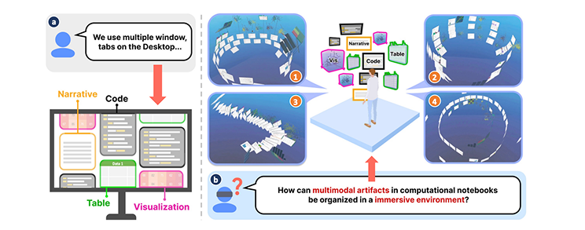
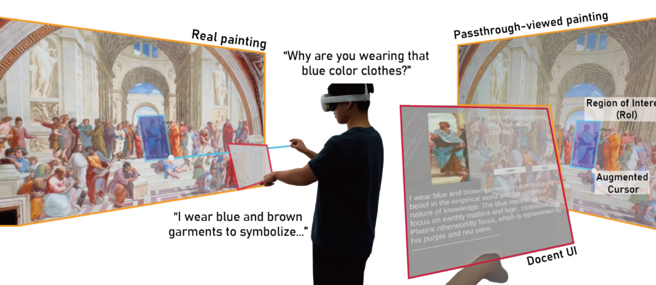
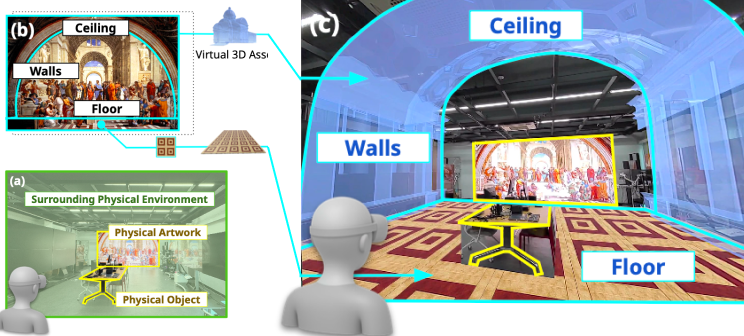
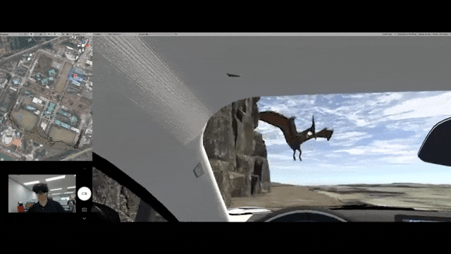

Minju Baeck
Ph.D. Candidate, KAIST
I explore how to make inaccessible sensory information perceivable and actionable.
My research combines cross-modal interaction, multisensory XR, and human–AI interfaces to help people perceive, share, and create digital experiences across XR, AR, mobile, and wearable platforms.
Ubiquitous Virtual Reality Lab · Advised by Prof. Woontack Woo & Prof. Sang-Ho Yoon
News
View all news →Education
KAIST | 2024 – Present
Ph.D. Candidate
UVR Lab · Advisors: Prof. Woontack Woo & Prof. Sang-Ho Yoon
KAIST | 2022 – 2024
M.S.
UVR Lab · Advisor: Prof. Woontack Woo
Chungnam National University | 2015 – 2020
B.S. Physics · B.F.A. Creative Design
Research Experience
3D Interaction Group · Virginia Tech | 2026.06 – 2026.08
Visiting Researcher · Prof. Doug Bowman
Expressive Computing Lab · UNIST | 2021.08 – 2021.12
Researcher · Prof. Kyungho Lee
Designed AI social robots for diverse users.
Human-Centered Intelligence Systems Lab · GIST | 2021.03 – 2021.08
Researcher · Prof. SeungJun Kim
Developed in-vehicle XR content and analyzed biometric data.
ETRI | 2018.01 – 2018.02
Research Intern
Laser diode and RF measurements, data visualization
Selected Works

Publications
View all publications on Google Scholar →Sharing Roughness with Hand-Outline Visualization to Reduce Sensory Asymmetry in VR Collaboration 🏆 (Best Paper Award)
IEEE Transactions on Visualization and Computer Graphics (TVCG). (IEEE ISMAR 2026)

Understanding Organizational Strategies Across Multimodal Artifacts in Immersive Computational Notebooks 🎖️ (Best Paper Award Honorable Mention)
IEEE Transactions on Visualization and Computer Graphics (TVCG). (IEEE ISMAR 2026)
Event-Based Referred Vibrotactile Feedback for Bare-Hand XR Interaction
IEEE Transactions on Visualization and Computer Graphics (TVCG). (IEEE VR 2026)
Visuo-Tactile Feedback with Hand Outline Styles for Modulating Affective Roughness Perception 🏆 (Best Paper Award Top 1%)
IEEE Transactions on Visualization and Computer Graphics (TVCG). (IEEE ISMAR 2025)
Whirling Interface: Hand-based Motion Matching Selection for Small Targets on XR Displays
IEEE International Symposium on Mixed and Augmented Reality (ISMAR 2024)
GestureMark: Shortcut Input Technique using Smartwatch Touch Gestures for XR Glasses
Augmented Humans International Conference (AHs 2024)
Collaborative Scene Mood Authoring with Voice-driven Multimodal Feedback Design in Virtual Reality
Demo, SIGGRAPH Asia 2025 XR

Region-Guided Interactive Docent for Paintings in Mixed Reality
IEEE ISMAR-Adjunct 2025

Architectural Elements Augmentation from 2D Artworks for Spatial Experience of AR Exhibition
IEEE ISMAR-Adjunct 2025
Memo:me, an AR Sticky Note With Priority-Based Color Transition and On-Time Reminder
IEEE VR Abstracts and Workshops (VRW 2023)
Honors & Awards
Research Awards
- 🏆 Best Paper Award · IEEE ISMAR · 2026
- 🎖️ Best Paper Award Honorable Mention · IEEE ISMAR · 2026
- 🏆 Best Paper Award · Korea Computer Congress (KCC) · 2026
- 🏆 Best Paper Award (Top 1%) · IEEE ISMAR · 2025
- Outstanding Paper Award · Korea Computer Congress (KCC) · 2025
Fun Projects


Project Title
Project Description
Leadership & Community
- 2024 – 2026 Global Shapers · Vice Curator
- 2024 – Present GDG Daejeon/KAIST · Member
- 2022 KAIST CT Student Assoc. · President
- 2019 – 2020 LG Global Challenger · Deputy Chief
- 2017 Physics Student Assoc. · President
- 2016 Midam Education Volunteer · President
- 2016 Natural Sciences Council · Member
Skills
- XR Development Unity, C#, VR/AR (Meta Quest, HoloLens)
- Physical Prototyping Arduino, Sensor Integration, 3D Printing
- Research User Studies, Experimental Design, R
- Design Tools Figma, Illustrator, Photoshop, After Effects, Blender, Rhino 3D
Teaching Experience
- 2026 KAIST · TA, 3D Interaction Design
- 2025 KAIST · TA, Augmented Reality Project
- 2025 National Children's Museum · Instructor